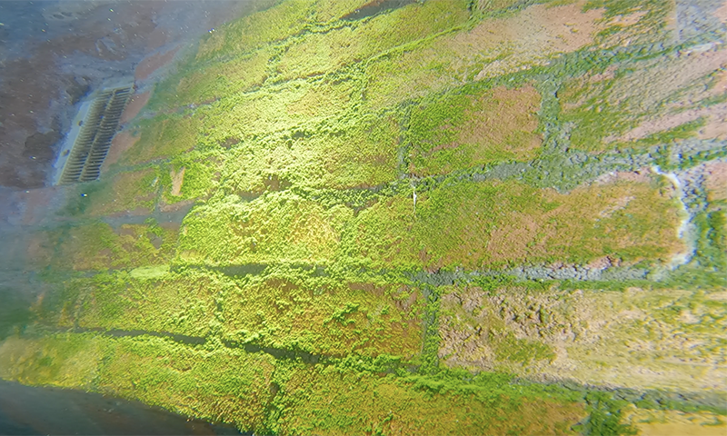

Get Started
Each cleaning session has specific requirements as a goal. To be productive, it is important to understand the purpose of the session.
Heavy Dust Cleaning
This is regular vacuuming session. Goals are:
- Vacuuming heavy dust on the props, floor and edges,
- Should be done after maintaince sessions (drill etc.)
- Keep the pool clean for regular divers.
IMPORTANT! Always clean props end of the session. Than you can keep them as much as clean.
Light Dust Cleaning
This is an alternative vacuuming session. Such sessions should be conducted by divers highly skilled in trim and buoyancy. During the session head down trim recomended and divers should be super slow to keep light dust on the floor.
Upside Down Profile
This profile can be use if a diver going to clean more than one level in same session. Advantages of this profile are:
- Particles formed while cleaning fall to the lower level. These particles can be cleaned in the second half of the session.
Detailed Cleaning
These type of cleaning sessions includes behind/under the props, inside the roots or the places you don't see at first glance. You mightt need to move props in the Detailed Cleaning Sessions. This is team work and people who are doing it should be experienced.
Green Algea Cleaning
Green algeas are not good for pool conditions. They should be clean by brush with vacuuming in same time.
IMPORTANT! Brushing should be slow enough to catch all the algeas. Otherwise algeas spread out all over the pool and start to grow there.
Wall Brushing
Main purpose is cleaninig white algea on the wall. There are lots of wall surface and divers should make it as fast as possible to complete specific area. These type of sessions get lower water quality and should be schedule another cleaning session after it. Otherwise pool contition effects much.
Floor Brushing
If floor gets sticky than divers can plan floor brushing session. It is easy to see needed from lines on the floor.
Acrylic Cleaning
Acrylic polishing and cleaning are two different thing. Polishing must be done with profesiionals. There are very limitted companies around the world. If you damage acyrilic cost will be extramly expencive.
Cleaning acrylics is kind a easy progress. Divers should use sponge and focus on yellow/brown spots.